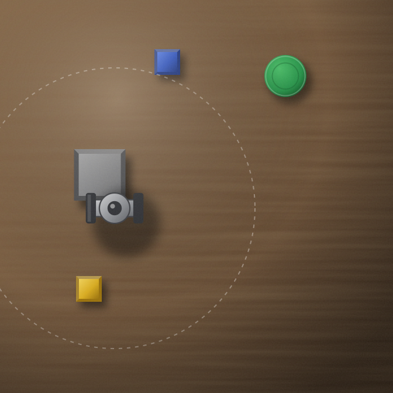
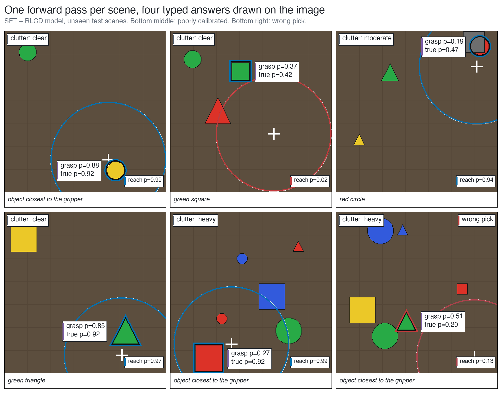
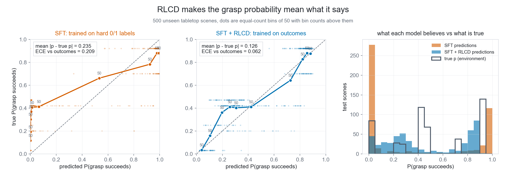
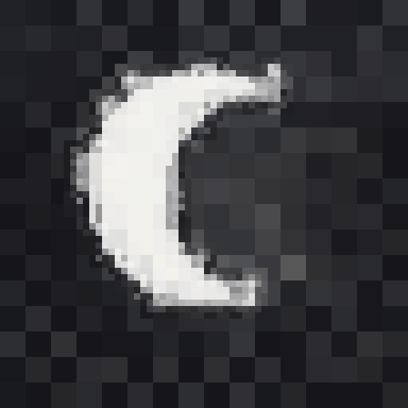
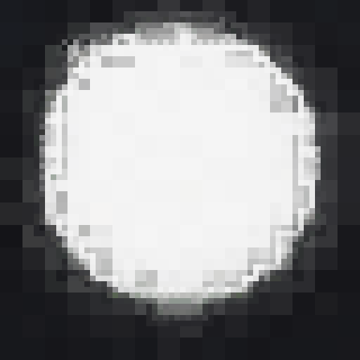
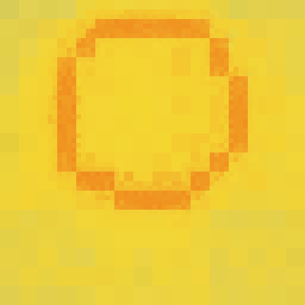
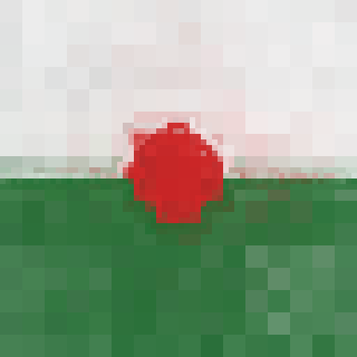
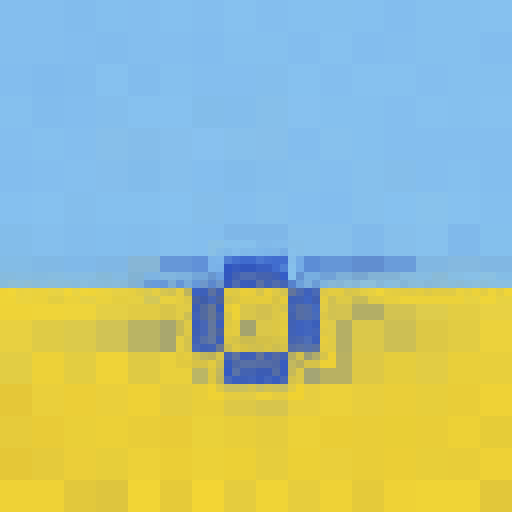

sysone-vl
Our model chooses which object a robot should pick up and estimates whether the grasp will succeed.
We fine-tuned Qwen2.5-VL-3B on simulated tabletop scenes. Given an image and an instruction like “pick up the object closest to the gripper,” it identifies the object, checks whether it’s within reach, estimates grasp success, and rates the clutter, all in about 110 ms.
The main problem was its confidence. After fine-tuning, it usually predicted either 0% or 100% success, even when the outcome was uncertain. We added an RL calibration step called RLCD to make those estimates more realistic. Afterward, grasps given a 25% chance of success actually worked about a quarter of the time.
One scene

- Which object?green triangle
- In reach?yes
- Will the grasp work?one time in fourtrue odds 0.25
- How cluttered?heavy
These are the true answers for this scene. The grey block is on top of the green triangle. Because of the block, a grasp works only one time in four.
The grasp answer is the one a robot needs most. With it, the robot can grasp now, move the other objects first, or ask a person. For this, the number must be honest. If the model says 0.25, the grasp must work about one time in four.
What the model says
Six test scenes that the model did not see in training. Each label is a real output of the trained model. “grasp p” is the model’s answer and “true p” is the simulator’s answer. The last two panels show mistakes: a bad grasp estimate and a wrong pick.

SFT + RLCD model · unseen test scenes
Honest odds
The model is Qwen2.5-VL-3B with small answer heads and a LoRA adapter. Supervised training only shows it “worked” or “failed,” so it learns to say 0 or 1. In a second stage, RLCD, the simulator tries each grasp and scores the model on its probability. Grasp calibration error went from 0.21 to 0.06. Temperature scaling alone left it at 0.21.

500 held-out scenes · dashed line is perfect calibration
- Picks the right object98.8% → 99.2%
- Gets reach right88.2% → 92.4%
- Grasp calibration error0.21 → 0.06
- Grasp odds, average miss0.24 → 0.13
Supervised only → after RLCD · from runs/*/eval.json in the repo
Also in the repo: imagen
imagen uses the same kind of typed questions to make pictures. It never asks a model to draw. It asks TypeSafe’s hosted model, Jev, what the subject is, what shape, what color and where it sits. Code turns the answers into pixels.





64 by 64 cells · unedited
Built on
sysone-vl is our own typed decision model on an open vision model, after TypeSafe’s public description of Jev. imagen calls TypeSafe’s hosted Jev API.